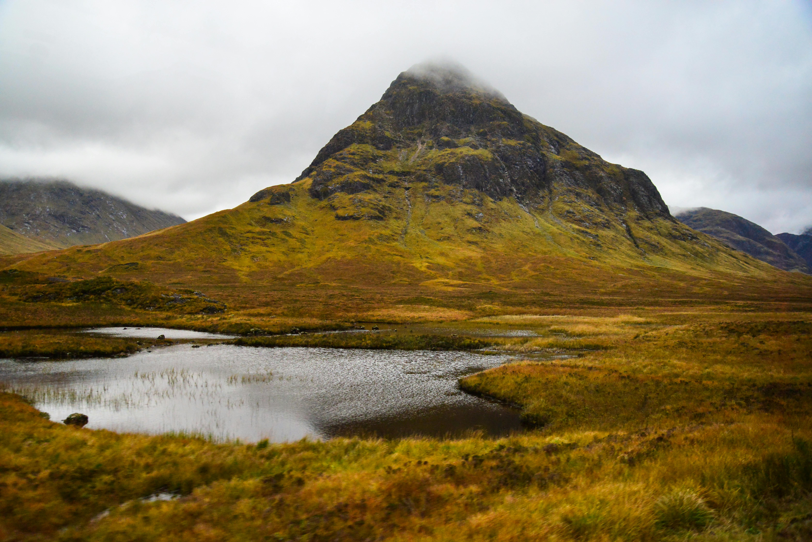
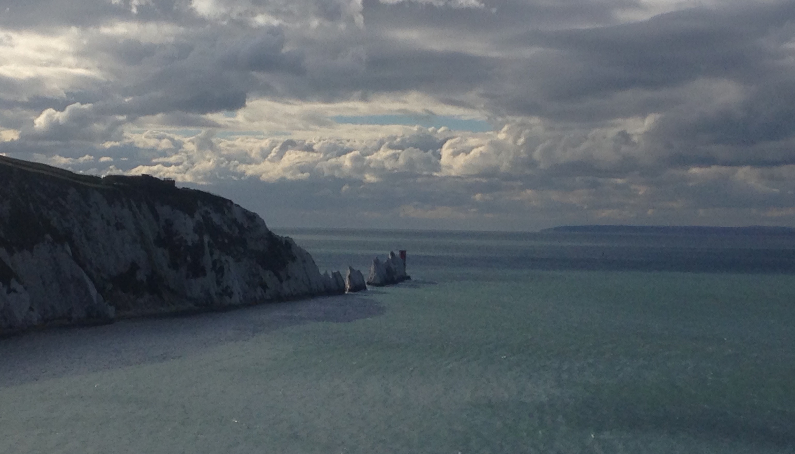
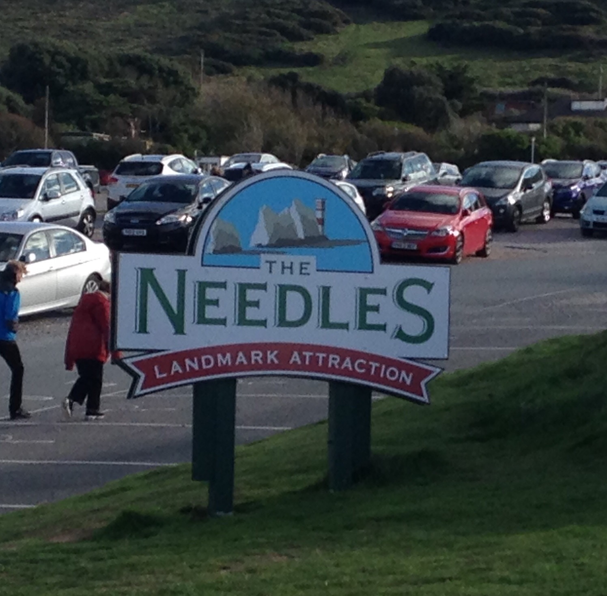
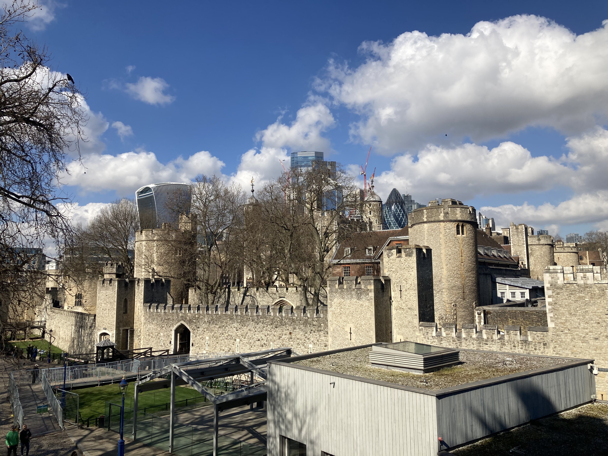
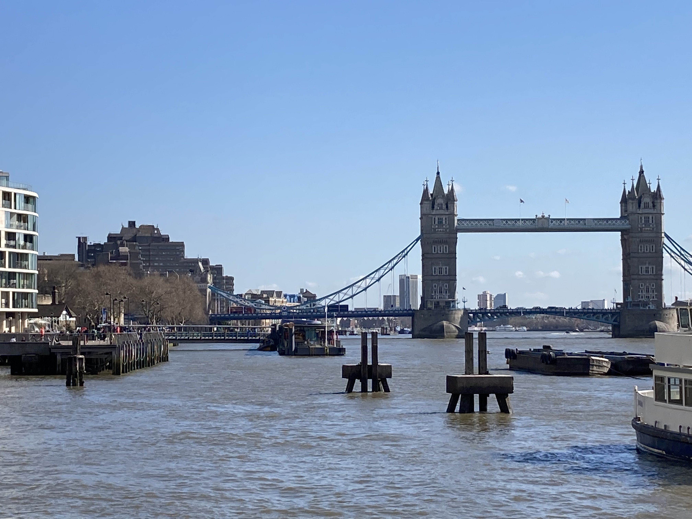
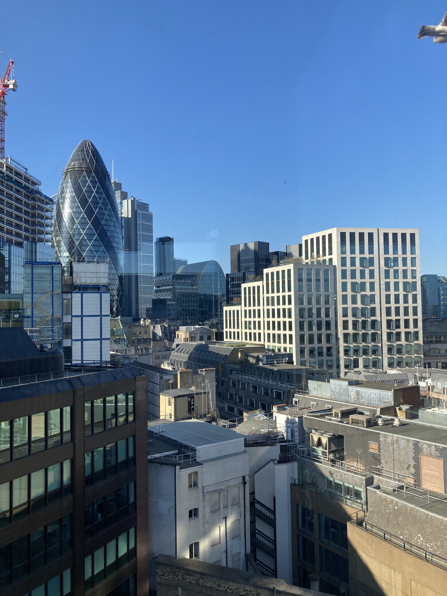
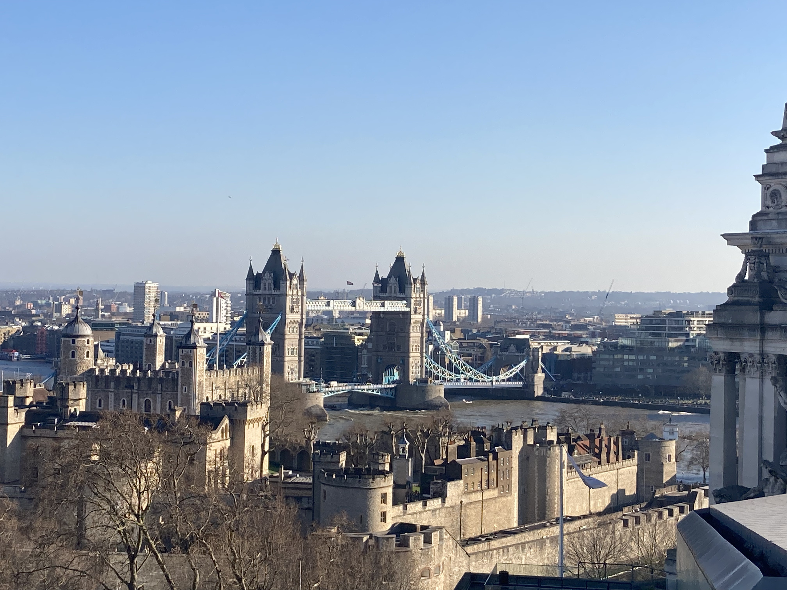
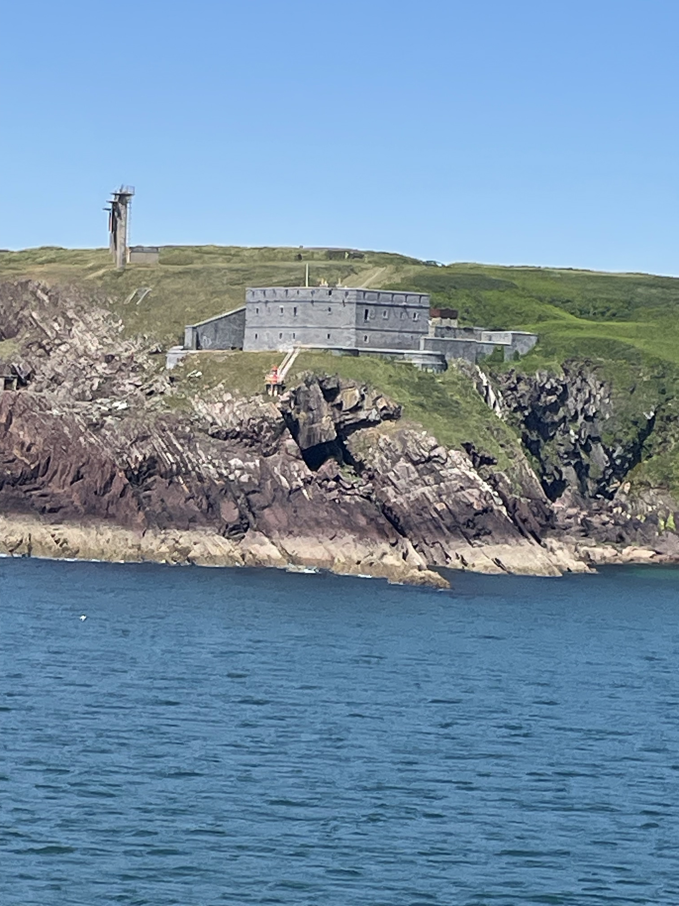
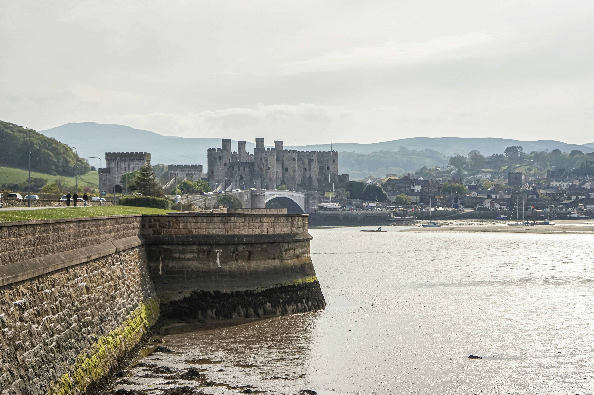

The United Kingdom —
four nations, endless adventures
As Irish travellers the UK is our nearest neighbour — and we've made the most of that over the years. From the dramatic Scottish Highlands and Edinburgh's Old Town to Belfast's black cab tours and the Game of Thrones Causeway Coast, London's West End, the Isle of Wight's Needles and Wales's rugged beauty — the UK keeps delivering no matter how many times you visit.
What the UK has given us:
Scotland — the Highlands, the castles and the seals of Troon
We've driven most of the Scottish Highlands and it remains one of our favourite road trips anywhere in the world. The landscape is extraordinary — mountains, lochs, ancient castles and skies that change mood every ten minutes. Stirling Castle is a brilliant stop that doesn't get enough credit compared to Edinburgh, and Fort William is a great base for exploring the surrounding mountains and glens.
Loch Ness is of course unmissable — whether you're a believer or not, standing on the shore of that vast, dark, mysterious loch and staring into the water is genuinely atmospheric. We didn't spot Nessie but we kept our eyes open.
Glencoe stopped us completely in our tracks. The scale and drama of the glen — the three sisters of Glencoe rising on either side — is one of the most powerful landscapes in the British Isles. It's a place that feels like it's telling a story even before you know the history.
And Troon — a lovely detour on the Ayrshire coast where we watched seals lazing in the sun. One of those brilliant unexpected moments that make road trips so special. Edinburgh deserves its own visit entirely — the Old Town, the Royal Mile, the Castle perched on its volcanic rock. One of the great European capital cities.

Book a Scotland tour through TourRadar
The Highlands are best explored with time and freedom — a guided tour takes care of the logistics so you can focus on the views. TourRadar has brilliant Scotland tours covering Edinburgh, the Highlands and beyond.
Disclosure: Affiliate link — we may earn a small commission if you book.
Book Scotland experiences with GetYourGuide
Highland day trips, Edinburgh Castle tours, Loch Ness cruises, whisky tastings and more.
Disclosure: If you book through these links we may earn a small commission at no extra cost to you.
Northern Ireland — Belfast, black cabs and the Game of Thrones coast
Northern Ireland is one of the most underrated destinations on the island of Ireland — and for Irish visitors it is incredibly accessible. Belfast has been transformed in recent decades and is now a genuinely brilliant city with a buzzing food scene, great pubs and one of the most fascinating recent histories of any city in Europe.
The black cab political tour is one of the most powerful travel experiences we've had anywhere. Hearing the stories of the Troubles from locals who lived through it, seeing the murals of the Falls and Shankill Roads and understanding the complexity of what happened there — it puts so much in context and stays with you long after you've left.
The Game of Thrones tour along the Causeway Coast was absolutely brilliant — even if you're not a die-hard fan, the landscape of the Antrim Coast is world class. The Dark Hedges, Cushendun Caves, Ballintoy Harbour and the Giant's Causeway itself make for one of the most spectacular coastal drives in Europe.
.jpg)
.jpg)

Book a Northern Ireland tour through TourRadar
Want to explore the Causeway Coast and Belfast properly with a guided tour? TourRadar has brilliant Northern Ireland tours that cover the Game of Thrones locations, Giant's Causeway and beyond.
Disclosure: Affiliate link — we may earn a small commission if you book.
🚗 Hiring a car in Belfast?
We drove ourselves around Northern Ireland and having our own wheels made the Causeway Coast so much better — you can stop wherever you want, take your time at the Dark Hedges and explore the smaller roads at your own pace. Check Klook for competitive car rental rates in Belfast.
Disclosure: If you book through this link we may earn a small commission at no extra cost to you.
England — London's West End, Shakespeare and the Isle of Wight
We've visited England several times and every visit delivers something different. London is a world city in the truest sense — endlessly entertaining, endlessly surprising. We've seen Dirty Dancing and MJ the Musical in the West End and both were absolutely brilliant — the production values are extraordinary and the atmosphere is electric.
A pilgrimage to Stratford-upon-Avon to see a Shakespeare play in the town where he was born is one of those genuinely special theatre experiences — there is something about watching Shakespeare performed in Stratford that feels entirely right.
Bristol is a fascinating city — creative, colourful and with a brilliant independent food and drink scene. Portsmouth has the Historic Dockyard and HMS Victory, which is a brilliant day out for anyone interested in naval history.
The Isle of Wight day trip was one of those brilliant unexpected highlights. The Needles — the iconic chalk stacks jutting out of the sea — are spectacular, Osborne House (Queen Victoria's favourite holiday home) is fascinating, and the beaches and coastal scenery are beautiful. Absolutely worth doing.







Book England experiences with GetYourGuide
London tours, West End show tickets, Stonehenge day trips, Oxford, Bath and much more.
Disclosure: If you book through these links we may earn a small commission at no extra cost to you.
Wales — Llandudno, Cardiff, Swansea and a country that surprises you
Wales holds a special place for us — Nicola visited Llandudno as a child and has fond memories of the Victorian seaside resort and its famous promenade. Returning as adults and driving around Wales gave us a completely different perspective on a country that is genuinely beautiful and criminally underrated.
Cardiff is a brilliant capital city — compact, walkable and with a great food and drink scene. Swansea has a lovely bay and a more relaxed, less touristy feel. The Welsh coastline is stunning and the driving between towns gives you dramatic countryside that reminds you why Wales punches well above its weight as a travel destination.

Book a Wales tour through TourRadar
Wales has some of the most dramatic scenery in the British Isles — Snowdonia, the Brecon Beacons, the Pembrokeshire Coast. A guided tour is a great way to see the best of it without spending your holiday navigating the roads.
Disclosure: Affiliate link — we may earn a small commission if you book.
Isle of Man — promenade walks and cats with no tails
The Isle of Man has a special nostalgic place in our hearts — visited many times as children and teenagers. The promenade at Douglas, the horse trams, the old-fashioned British seaside charm and of course the Manx cats — the famous tailless cats that are native to the island and wander around with complete confidence.
The Isle of Man TT motorcycle races are world famous and the island has a character all of its own — a Crown dependency with its own parliament, its own laws and its own very distinct identity. Worth a visit for the novelty alone, and the ferry from Dublin or Belfast makes it very accessible from Ireland.
Find your UK hotel on Klook
Great deals on hotels across the UK — London, Edinburgh, Belfast, Cardiff and beyond.
Disclosure: If you book through these links we may earn a small commission at no extra cost to you.
Common questions
UK travel FAQ
What to pack for the UK
UK packing essentials — what we'd bring
The UK weather is famously unpredictable — layers are essential whatever the season. A waterproof jacket is non-negotiable for the Highlands. Comfortable walking shoes are a must for city exploring and coastal walks.
Non-negotiable for Scotland — the Highlands weather can change in minutes. A good waterproof keeps you comfortable whatever the day throws at you.
View on Amazon →From London's streets to Highland trails and coastal walks on the Isle of Wight — good supportive shoes are essential for any UK trip.
View on Amazon →Stay connected without roaming charges — especially useful for navigation on long Highland drives and finding your way around London.
View on Amazon →Long days sightseeing and navigating drain your battery fast — a power bank keeps you going all day whether you're in London or the Highlands.
View on Amazon →Perfect for city days, coastal walks and Highland hikes — keeps your essentials organised and hands free all day.
View on Amazon →Disclosure: These are Amazon affiliate links. If you buy through them we may earn a small commission at no extra cost to you.
Planning your own UK trip?
The UK is endlessly varied — you could spend a lifetime exploring it and still find new things to love. Start with the Scottish Highlands, do the Game of Thrones coast in Northern Ireland and catch a West End show in London. You won't be disappointed.
Affiliate disclosure: if you book through our links we may earn a small commission at no cost to you. We only recommend trips and experiences we'd be happy to stand over.